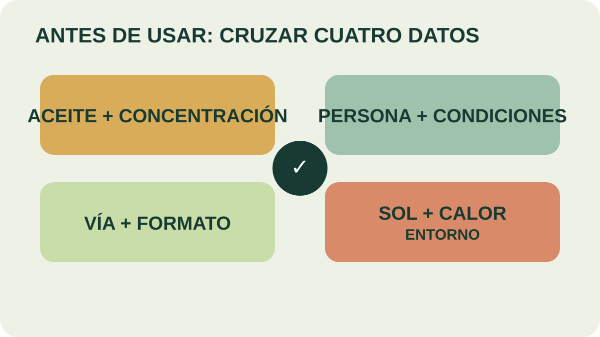

Módulo 28 · 20 minutos
Contraindicaciones: cuándo no
Al terminar, vas a poder revisar una fórmula y detectar condiciones que obligan a descartarla o derivarla.
Una buena fórmula también sabe detenerse
Tres aceites, una arquitectura clara y una dilución medida no bastan. Falta preguntar para quién es, cómo se aplicará y qué condiciones vuelven inadecuado el uso. Esta revisión no va al final en letra pequeña: decide si la preparación puede avanzar.
La regla general
Los aceites esenciales son sustancias muy concentradas. Una cantidad mayor que la indicada no mejora el resultado y puede aumentar el riesgo. Antes de cualquier uso continuado, el material indica consultar con un profesional.
Una no se resuelve bajando unas gotas sin más. Puede exigir cambiar el aceite, el formato o descartar la aplicación.
Condiciones que obligan a revisar
Para hipertensión, epilepsia o enfermedades neurológicas, el material señala precauciones con romero, salvia, tomillo e hinojo; destaca romero y salvia para epilepsia, y romero para presión alta.
Durante el embarazo enumera angélica, enebro, mejorana, romero, hinojo, camomila, lavanda y melisa, y otra lista suma albahaca, alcanfor, mirra, clavo, cedro y salvia. La coexistencia de listas confirma que el filtro no puede reducirse a recordar una sola planta.
El material también marca aceites que no deben ponerse en contacto directo con la piel: canela, clavo, bergamota, enebro, jengibre, limón, menta, pino y tomillo. La regla transversal sigue siendo nunca aplicar aceite esencial puro.
Luz, ingestión y prueba previa
La se asocia en el material con bergamota, pomelo, naranja, limón, cedrón y angélica. Una fórmula cutánea con estos aceites exige evitar la exposición solar indicada.
La ingestión queda fuera de este curso. El material advierte que la vía oral puede causar daños y que cualquier uso alimenticio especializado requeriría supervisión estricta. La cosmética natural no autoriza a convertir una fórmula tópica en producto ingerible.
Antes del uso se comprueba si existe alergia o irritación mediante una . Si existe una condición médica, una reacción o una exposición accidental, se interrumpe el uso y se busca orientación profesional; el curso no sustituye una evaluación clínica.

Buscá las repeticiones
Localizá los aceites que aparecen en más de una fila. ¿Por qué una repetición exige más atención? Elegí una fórmula imaginaria y recorré la matriz antes de aceptarla.
Otras dos barreras
Los frascos permanecen fuera del alcance de los niños y lejos de fuentes de calor por su inflamabilidad. Después de manipular aceite puro se lavan las manos. Estas medidas no dependen de la fórmula: pertenecen al manejo del producto concentrado.
El encuadre final es educativo y cosmético. No habilita a diagnosticar, prescribir, tratar enfermedades ni prometer curaciones. Tampoco reemplaza la evaluación de seguridad y la habilitación que corresponda a un producto comercial.
Actividad · Revisión antes de formular
Analizá tres casos: una mezcla cutánea con limón antes de exposición solar; una fórmula con romero para una persona con presión alta; una preparación sin diluir. Identificá el motivo de descarte. En vez de sugerir un tratamiento, describí qué dato falta o por qué corresponde detenerse.
Del frasco a una fórmula defendible
La Parte 5 termina con una mezcla que puede explicar su composición, vehículo, proporción, evolución aromática y límites. La última parte preguntará si ese conocimiento puede sostener una actividad productiva responsable.
Guardá esta estación
Cuando puedas explicar la idea central con tus propias palabras, marcá el módulo como completado.